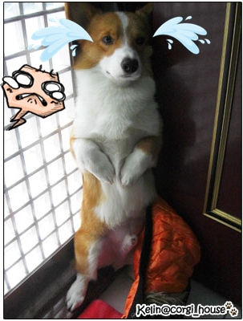
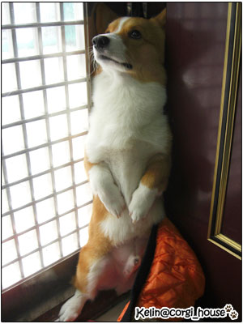
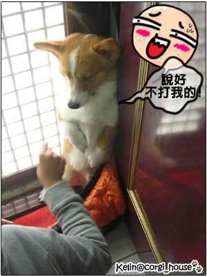
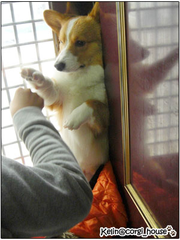

摩卡卡今天穿衣服很不甘願!!一直跑給麻麻追~結果被我逼到門口角落!嘿嘿 
手正要去抓他肥肥胖胖的小手時!!
他居然就愈升愈高!!!呃....站起來了!!  還黏在牆角剛好!
還黏在牆角剛好!
(對於柯基這種肥短的身材~要慢慢升起來可是個高難度耶!! 拍手拍手拍手!  )
)
sorry 這不是重點!

摩卡：手手用力縮在肚子上！看你怎嘛穿 
我是男子漢大丈夫~說不穿就不穿！
麻麻：都噴淚了！是算那門子的男子漢啊！

這個小傢伙怎嘛叫就是不下來！還乾脆坐好跟老木僵持中....
明明穿好就要出去玩了!!

後來看他的手手實在是很可愛!!很像戴拳擊手套的袋鼠
就假裝出拳要來個對打~ 他整個很挫...
他整個很挫...
唉呦!!不錯嘛~~還會跟麻麻套招!!

他把小手手伸出來擋的時候有夠可愛!!! 
我那捨得扁你啊!!兒子....我們家都用愛的教育!! 很少開扁~但還是有.^^
開扁的時候就是犯了大忌啦!!!哈哈哈 
最後那天的結局啊!?
摩卡卡證明了他鐵錚錚男子漢的決心!! so今天要讓他裸體出門嘍!~~噗!!